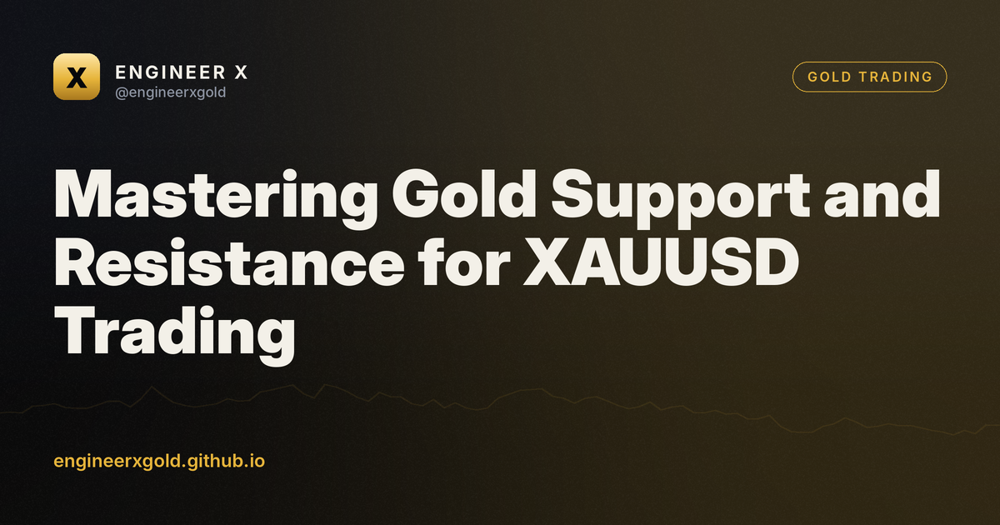

Mastering Gold Support and Resistance for XAUUSD Trading
12 October 2026 · Engineer X educational research

Key takeaways
- Support acts as a historical price floor, while resistance acts as a ceiling.
- Combine horizontal levels with market structure and liquidity analysis for better context.
- Always seek confluence from multiple technical factors before entering a trade.
- Use strict risk management and place stop losses beyond invalidation points.
Understanding Gold Support and Resistance
Support and resistance levels form the foundation of technical analysis in XAUUSD trading. Support acts as a price floor where buying interest historically overcomes selling pressure, preventing further decline. Resistance acts as a ceiling where selling interest outweighs buying demand, halting upward momentum. These zones are not exact price lines, but rather areas where market participants repeatedly make decisions.
For retail traders, identifying these boundaries provides a structured way to view market sentiment. Gold responds well to key structural levels because large institutional participants often place orders near previous swing highs and lows. Recognizing these zones helps you avoid chasing price movements and instead wait for logical reaction points.
How Market Structure Defines Key Levels
Traditional support and resistance relies on horizontal lines connecting previous highs and lows. In modern price action and Smart Money concepts, these levels gain significance when aligned with market structure shifts. When XAUUSD breaks a significant swing high and leaves behind an imbalance, that previous resistance often transforms into a future support zone.
Consider a hypothetical scenario where gold trends upward, pulling back from 2050 to a previous swing high at 2030 before continuing higher. That 2030 level transitions from a ceiling into a potential floor. Smart traders monitor how price reacts when it revisits these historical zones, looking for confirmation rather than placing blind limit orders.
🎁 Try our VIP group free for 7 days
Daily XAUUSD zones before London, live signals with entry zone, stop and targets, and every result posted — wins and losses. No card, no payment.
Volume and Liquidity at Critical Zones
Price often gravitates toward areas of high liquidity, which typically cluster above resistance and below support. Retail stop losses and breakout orders rest in these regions. Large market participants often use this liquidity to fill large institutional orders before driving the price in the opposite direction.
Understanding this dynamic prevents you from falling victim to false breakouts. If XAUUSD spikes above a daily resistance level hypothetically set at 2075, a true breakout requires sustained acceptance and volume above that zone. A quick sweep followed by an immediate reversal usually indicates a liquidity grab rather than a genuine trend continuation.
Applying Confluence for Higher Probability Setups
Relying on a single support or resistance line rarely yields consistent results. Successful XAUUSD traders look for confluence by combining horizontal levels with other technical tools. This might include higher timeframe market structure, volume profile nodes, or Fibonacci retracement levels.
For example, if a 4-hour support level coincides with a 50 percent retracement of a major impulsive move, the probability of a meaningful reaction increases. Confluence reduces false signals and gives you a clearer framework for defining your invalidation points and risk parameters.
Risk Management Around Support and Resistance
Even the most reliable gold support and resistance zones fail. Markets can break through any technical level due to unexpected macroeconomic data or shifting geopolitical conditions. Therefore, strict risk management remains essential for long-term survival in XAUUSD trading.
Always define your risk before entering a trade based on key levels. Place your stop loss beyond the technical invalidation point—such as below the swing low of the support zone. If the market breaks that structure, accept the small, controlled loss and wait for the next clear opportunity.
FAQ
Are gold support and resistance lines exact prices?
No, they are typically zones rather than exact figures. Institutional orders cluster in price areas rather than single ticks, meaning price can overshoot a level slightly before reversing.
What timeframe is best for finding XAUUSD support and resistance?
Higher timeframes such as the 4-hour and daily charts provide more reliable support and resistance levels because they reflect broader market participation compared to lower timeframes.
Why do support and resistance levels fail?
Levels fail when underlying supply and demand dynamics shift, often driven by macroeconomic news releases, institutional order flow, or a broader trend continuation.
How can I avoid false breakouts in gold trading?
Look for confluence with higher timeframe structure, wait for candle closes beyond the level, or observe volume behavior to confirm whether the breakout has genuine institutional backing.
🎁 Try our VIP group free for 7 days
Daily XAUUSD zones before London, live signals with entry zone, stop and targets, and every result posted — wins and losses. No card, no payment.